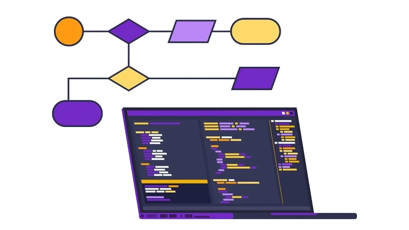
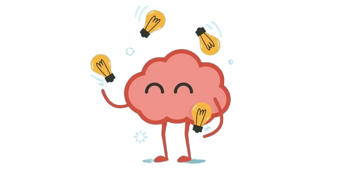
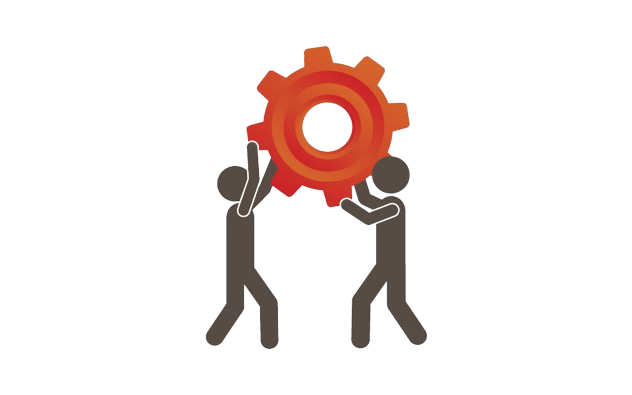

Hola,
Me llamo Denis Sebastian Abad Santos, nacido el 14 de julio de 2006 en Guatemala. Actualmente tengo 17 años. Mis padres, Juan Abad y Zoila Santos, me han enseñado muchas cosas hasta hoy en día, y a ellos los valoro mucho. Soy de Santa Catarina Pinula, aldea Laguna Bermeja, y toda mi vida he vivido y crecido aquí, junto a mi familia, que es numerosa, ya que siempre crecí conviviendo con mis padres, hermanos, abuelos, tías y mi prima. Todos ellos me han enseñado muchos valores y de ellos aprendo y tomo ejemplo, ya que soy el menor de mi familia. Respecto a mis estudios, comencé la primaria en un colegio llamado "Colegio Particular Mixto Santa María de los Ángeles", cerca de mi casa. Luego me gradué de sexto grado y cambié a un colegio llamado "Colegio Parroquial Nuestra Señora de Guadalupe", el cual me enseñó más sobre Dios y la iglesia. Este colegio, debido a la pandemia, quebró, y fue entonces, en el año 2021, cuando ingresé al colegio en el que me encuentro en este momento: "Centro Educativo Técnico Laboral Kinal".
Actualmente estoy cursando el sexto grado de Perito Informática, el cual espero completar satisfactoriamente sin problemas.
¿Qué espero para este año educativo?
La verdad, espero mejorar tanto como desarrollador como persona. Aspiro a mejorar mis hábitos y horarios para poder concentrarme más en mis clases y obtener mejores calificaciones. También espero aprender mucho sobre programación, ya que, a pesar de que me cuesta un poco de trabajo, me llama la atención ciertas tecnologías, como lo que veremos este año, que es el desarrollo web.
Habilidades a desarrollar
Lógica de programación
Espero mejorar mi lógica de programación para poder tener la habilidad de resolver problemas más rápido y programar de manera más eficiente.
Aprendizaje
Aspiro a seguir aprendiendo nuevas tecnologías para incrementar mis habilidades como programador.

Trabajo en equipo
También espero seguir mejorando esta habilidad para continuar aprendiendo de los demás.
